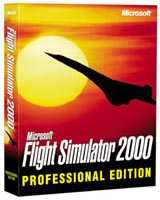

FS2000
Review Teil 1
von Felix Dudek
Es ist vollbracht! Der Großmeister aller
Flugsimulationen steht im neuesten Gewand - früher als
erwartet - in den Geschäften. Mit kleinen Videos,
Sounddateien und immer neuen Screenshots lies Microsoft im
Vorfeld den Simmern das Wasser im Munde derart
zusammenlaufen, daß Eifrige sich den FS2000 gleich in den
USA bestellten oder sogar bereit waren, 500 Mark an
denjenigen zu bezahlen, der ihm das Meisterstück
persönlich vorbeibrachte. Solch eine Euphorie gab es
nicht mal bei FLY!, dem bisher schärfsten Konkurrenten,
obwohl Terminal Reality eine Werbekampagne ohnegleichen
gefahren ist. Nun scheint es, daß das Geld wohl umsonst
geflossen ist, denn im Gegensatz zu TR's Gegenstück
bricht der FS2000 schon jetzt alle Rekorde.
 Monate
vorher war der FS2K Gesprächsstoff in zahlreichen
Newsgroups, um frühe Betas oder gar Alphas scharrten sich
die Leute bis zum Gehtnichtmehr wie sonst nur in der
Ex-DDR bedauernswerte Ossis um Bananen (E.N: der Author
ist selber ein 'Ossi' und weiß worüber er schreibt...).
Die wenigen Exemplare, die in die Händlerregale
strömten, gingen weg wie warme Semmeln, zahlreiche
Versandhändler führten den FS2000 schon am ersten Tag
nicht mehr und mussten auf Nachlieferungen warten. Ein
Hype ohnegleichen - berechtigt? Wir bei simflight.de
wollen dieser Sache nach- und dem FS2000 auf den Grund
gehen. Grundlage unserer Betrachtung bildet dabei die
Professional-Version, die mit zusätzlichen Fluggebieten
und Flugzeugen aufwarten kann.
Monate
vorher war der FS2K Gesprächsstoff in zahlreichen
Newsgroups, um frühe Betas oder gar Alphas scharrten sich
die Leute bis zum Gehtnichtmehr wie sonst nur in der
Ex-DDR bedauernswerte Ossis um Bananen (E.N: der Author
ist selber ein 'Ossi' und weiß worüber er schreibt...).
Die wenigen Exemplare, die in die Händlerregale
strömten, gingen weg wie warme Semmeln, zahlreiche
Versandhändler führten den FS2000 schon am ersten Tag
nicht mehr und mussten auf Nachlieferungen warten. Ein
Hype ohnegleichen - berechtigt? Wir bei simflight.de
wollen dieser Sache nach- und dem FS2000 auf den Grund
gehen. Grundlage unserer Betrachtung bildet dabei die
Professional-Version, die mit zusätzlichen Fluggebieten
und Flugzeugen aufwarten kann.
Da der "Neue" ein echter Brocken ist, teilen wir
das Review in mehrere Teile. Den Anfang macht eine
Beleuchtung der technischen Aspekte und der beliebte
"First Look", gefolgt von Flugzeugen über
Szenerien, um letztendlich um das Handling zu kreisen.
Eine große Aufgabe also, die aber -das hat man schon im
Vorfeld gesehen- Spaß macht. Spaß auch deshalb, weil
klar erkennbar ist, daß die Redmonder den FS nun fast bis
zur perfekten Reife getrieben haben. Den Spruch, der
FS2000 sei mehr Evolution denn eine Revolution, kann man
getrost an den Nagel hängen. Aber wer eine kritische
Betrachtung des Millenium-Simulators sucht, wird bei
diesem Test gelangweilt sein. Es folgt ein Lobgesang auf
den besten Simulator des Jahrhunderts! Na denn, Take Off!
 Die
neue Bescheidenheit
Die
neue Bescheidenheit
Kaum ein anderer Simulator hat im Vorfeld zu wahren
Begeisterungsstürmen hinreißen lassen. Die aufgebohrte
Detaildarstellung ließ frohlocken - doch gleichzeitig war
klar, daß das seinen Preis hat: schnelle Prozessoren,
wenn möglich noch eine Top-Grafikkarte.
Beta-Tester waren geschockt vom Hardware-Monster, selbst
auf PIII 550 gelang es nicht annähernd, hohe zweistellige
FPS zusammenzubekommen. Doch der Zorn war schnell
verflogen, wußte oder glaubte man, daß Betas nicht
umsonst so heißen und bei ihnen in den wenigsten Fällen
bezüglich der Framerate geschraubt wird. Umso größer
die Ernüchterung beim fertigen Produkt. Besitzer, die mit
ihrem Powerpferd im FS98 Frames über 70 erreichten,
müssen im FS2000 radikal umdenken. Auf einem typischen
"Durchschnittsrechner", also PII 350 mit 64 MB
Ram dürfen keine großen Sprünge zu erwarten sein,
maximal 10-13 FPS ist das höchste der Gefühle. Deshalb
der Rat: unter einem PII 350 sollte man noch nicht einmal
an den FS2000 denken!!!! So bitter das auch ist, aber auf
diesen Stufen ist kein fliegen mehr möglich. Das
Abschalten einiger Details halte ich in diesen Situationen
für sinnlos, denn dann kann man gleich wieder zum FS98
zurückkehren. Daß einige User mit einem PII 333 30-50
Frames erreichen sollen, ist glatter Unfug, noch nicht
einmal der Athlon schafft diese Hürde. Was wird also
benötigt? Unsere Tests zeigen, daß dem Prozessor und der
Grafikkarte sicherlich die Hauptlast zufällt, dennoch
sollte man erst einmal an eine Erweiterung des
Hauptspeichers denken. Eine Größe von 128 MB ist fast
schon Standard, wer es luxuriös haben will, greift zu 256
Megabyte. Sicherlich sind die Preise etwas gestiegen, aber
auch zukünftige Programme werden es mit schnelleren
Abläufen danken. Das zeigt auch der FS2000: bei 64 MB
kommt es selbst auf einem 600 MHZ getakteten Pentium III
Prozessor zu massiven Performance-Einbrüchen. Mit 128 MB
sieht die Sache schon besser aus, ab 256 wird es richtig
flüssig, ohne nervige Aussetzer.
Eine gute Grafikkarte ist in den meisten Rechnern
Standard, jedoch zeigen Tests mit einer TNT2-Karte die
besten Ergebnisse; dabei ist es gleich, ob nun der
"normale" TNT2-Chip oder TNT2-Ultra verwendet
wird, der Unterschied betrug maximal 3 FPS. Gut gefahren,
bzw. geflogen sind wir mit der Maxi Gamer Xentor 32 von
Guillemot und der Viper 770 von Diamond, beide mit 32 MB
Ram. Bei Karten von Elsa soll es zu einigen Problemen
gekommen sein, die sich bis heute nicht lösen ließen.
 Und
der Prozessor? Ab einem PIII450/500/550 inklusive
vorangegangenen Komponenten blüht der FS2K so richtig
auf. Mit einiger Feinarbeit und Detailtuning fliegt es
sich auf einem PIII 500 konstant mit 20-25 FPS. Übrigens
bieten die genannten Prozessoren zur Zeit das beste
Preis-/Leistungsverhältnis, ein 600er ist noch zu teuer.
Auch auf den Athlon gebe ich zur Zeit wenig: mag sein,
daß es sich bei ihm um den perfekten Prozessor für Spielfreaks
handelt, aber die Vergangenheit hat gezeigt, daß AMD
Intel noch nicht einmal Ansatzweise gefährlich werden
konnte. Hier heißt es erst einmal abwarten.
Und
der Prozessor? Ab einem PIII450/500/550 inklusive
vorangegangenen Komponenten blüht der FS2K so richtig
auf. Mit einiger Feinarbeit und Detailtuning fliegt es
sich auf einem PIII 500 konstant mit 20-25 FPS. Übrigens
bieten die genannten Prozessoren zur Zeit das beste
Preis-/Leistungsverhältnis, ein 600er ist noch zu teuer.
Auch auf den Athlon gebe ich zur Zeit wenig: mag sein,
daß es sich bei ihm um den perfekten Prozessor für Spielfreaks
handelt, aber die Vergangenheit hat gezeigt, daß AMD
Intel noch nicht einmal Ansatzweise gefährlich werden
konnte. Hier heißt es erst einmal abwarten.
Aber Moment mal! Hat Microsoft da nicht etwas anderes
gesagt? Pentium 166-Prozessor und 32 MB Ram? Das ist nicht
nur schamlos untertrieben, das ist frech und Verhöhnung
derer, die diese Konfiguration ihr Eigen nennen.
Spaßeshalber haben wir uns die Installation auf einem
Notebook mit eben diesen Spezifikationen angetan. Die
Festplatte gab während des Installationsvorganges derart
hübsche Geräusche von sich, daß man sich den Besuch der
nächsten Love Parade sparen kann. Und danach? Wer seinen
Nachbarn oder Bekannten einmal eine etwas andere Diashow
bieten will, sollte beherzt zugreifen.
 Raindrops
keep falling on my head....
Raindrops
keep falling on my head....
Nach den überwundenen technischen Hürden ist es an
der Zeit, dem FS2000 ein paar Momente zu schenken. Bereits
beim Auspacken wird bestätigt, was die massive Box
bereits ahnen ließ - ein Schwergewicht mit viel Format.
Endlich gibt es wieder ein ordentliches Handbuch, das
problemlos als Bettlektüre dienen kann, denn der lockere
Schreibstil von Fluglehrer Rod Machado macht Appetit auf
mehr. Allerdings hätten die Infos zu den einzelnen
Flugzeugen etwas intensiver ausfallen können, aber das
ist Geschmackssache.
Nun ist mein Mund so wässrig, daß ich es nicht mehr
aushalte. Ich muß wieder nach Hause, zurück, zurück in
die Cessna, zurück nach Meigs. Und endlich bin ich da.
Meine Augen richten sich sofort auf die wuchtige Skyline
von Chicago. Massive Wolkenkratzer ragen in den Himmel,
die Anzahl ist vervielfacht worden. Die Häuser, das
gesamte Stadtgebiet überhaupt wirken plastischer, zum
Greifen nahe. Sämtliche Gebäudetexturen wirken runder,
irgendwie satter. Hier muß man nicht viel Phantasie
aufbringen, um sich eine Großstadt vorzustellen, sie ist
bereits präsent!! Auch Meigs Field erstrahlt im neuen
Glanz, der Platz wirkt insgesamt lebendiger und endlich
sind auch die Bodentexturen dem realen Pendant mit seinem
satten Grün angeglichen. In nächtlicher Umgebung zeigt
sich Chicago gleich doppelt so gut. Die Häuser strahlen
um die Wette, endlich ist die unrealistische weiße
Beleuchtung einer Symbiose aus roten, gelben und weißen
Lichtern gewichen. Auf gleicher Ebene bewegen sich die Grundtexturen:
derart schön illuminiert wurde noch keine Stadt.
Besonderer Clou: nach Sonnenuntergang bewegen sich kleine
Lichtpunkte, die Autos repräsentieren sollen, auf den
Straßen und machen den Eindruck perfekt: dort unten
herrscht Leben. Grandios!
Doch genug vom Sightseeing, ich möchte endlich das viel
gerühmte Wettersystem ausprobieren. Kurzerhand bastle ich
mir eine dicke Wolkendecke mit schönem Platzregen. Und
siehe da: Sekunden später hat sich der Himmel zu einem
düsteren Grau-Schwarz verzogen, Regen prasselt auf das
Dach, läuft die Frontscheibe runter und Blitze zucken vom
Himmel. Schade nur, daß selbst in der höchsten
Einstellung der Regen etwas an Intensität vermissen
läßt, ein kräftiger Schauer sieht meines Erachtens
anders aus. Doch egal, Fakt ist, daß sich Mitbewerber von
diesem Wettersystem eine Scheibe abschneiden können -
besser sahen Wolken und Unwetter nirgends aus.
Vollends erwischt hat es mich dann bei Sonnenauf- und
Sonnenuntergängen. Bei Tagesanbruch erhebt sich die
Sonne, umhüllt von Nebelschwaden, in den blassgelben
Himmel und schickt die ersten Strahlen zur Erde. Die
Wolken erscheinen noch dunkel am Firmament, doch gegen
Mittag hat man den schönsten Sommerhimmel. Der
Sonnenuntergang taucht den Himmel in ein rötliches Licht,
langsam verschwindet der Feuerball hinter dem Horizont und
beleuchtet noch schwach die Umgebung. Ich könnte
Luftsprünge machen, so zieht mich dieses Schauspiel in
den Bann. Ich darf gar nicht daran denken, wie die Grand
Canyon Szenerie von Wilco, wenn sie kompatibel gemacht
wird, und die Sonnenschauspiele harmonieren werden. Da
kann man Nerven aus Stahl haben - in diesen Augenblicken
werden sie schmelzen.
 Der
letzte Blick
Der
letzte Blick
Wie sieht es mit den Flughäfen aus? Sind die
grandiosen Texturen und Naturschauspiele nur Blendwerk?
Mitnichten. Es gibt keine häßlichen FS5-Klötzer mehr,
sämtliche Terminals und Airport-Gebäude erstrahlen im
neuen Glanz. Viel Wert wurde auf ein möglichst exaktes
Grundlayout gelegt. Wenn auch nicht die Terminals im
Aussehen der Wirklichkeit entsprechen - man weiß
zumindest, wo man sich befindet. Ich wähle für einen
ersten Check meine ehemalige Zwischenheimat Lagos in
Nigeria. Es gibt keinen Grund zu meckern: Lagos ist auch
als solches zu erkennen. Selbst das neue Terminal wurde
eingefügt. Phantastisch. Eigentlich fehlen nur noch
Docking Bridges, um das Glück perfekt zu machen. Ich
ziehe weiter nach Osten, nach Ägypten. Auch hier ist der
Airport von Kairo klar zu identifizieren, keine
Verwechslungsgefahr mit der Scheune von Hinterhumpelhausen
mehr. Viel wichtiger aber ist, daß Deutschland nun fast
komplett abgedeckt ist. Vorbei die Zeiten, als Augsburg
und Oberpfaffenhofen im FS noch zu den Weltstädten
gezählt werden mussten. Hamburg, Paderborn, Leipzig,
Kiel, Egelsbach, alles da. Grundszenerien wie Europe 1
oder auch EU2 und 3 für die Nachbarländer sind nicht
mehr notwendig. Es zeigt sich, gerade im Bereich der
Szenerien, daß der FS2000 mehr als eine kosmetische
Nachbehandlung darstellt. Im Grunde genommen kann man von
einem komplett überarbeiteten Programm sprechen, das
seinen Preis wert ist. Die Jungs und Mädchen aus Redmond
haben sich nicht auf ihren Lorbeeren ausgeruht sondern
kontinuierlich weiterentwickelt. Das betrifft nicht nur
Szenerien, sondern auch Flugzeuge, das schon erwähnte
Wetter, Navigation und weitere Dinge. Wir werden uns
diesen in den nächsten Ausgaben widmen und dem FS2K
weiter auf den Grund gehen.
Felix Dukek
FelixDudek@aol.com
11.November 1999


{kind=link}